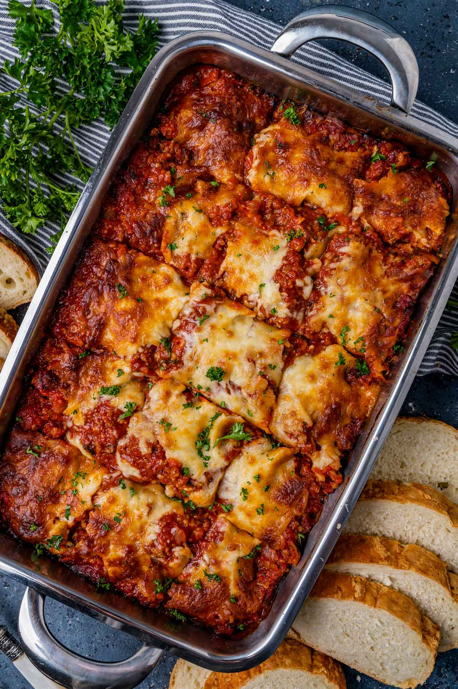

Beef ramen

Description
Lasagna is a classic Italian dish consisting of alternating layers of flat pasta sheets, meat sauce, cheese, and sometimes vegetables. The pasta sheets are typically pre-cooked before being assembled in a baking dish with layers of meat sauce (often made with ground beef, onions, garlic, and tomatoes) and cheese (such as mozzarella and Parmesan). The layers are then baked until the cheese is melted and bubbly, resulting in a deliciously comforting and indulgent casserole-style dish.
Ingredients
- For the meat sauce:
- 1 pound (450g) ground beef
- 1 onion (chopped)
- 2 cloves garlic (minced)
- 1 can (14 ounces) crushed tomatoes
- 1 can (6 ounces) tomato paste
- 1 can (8 ounces) tomato sauce
- 1 teaspoon dried basil
- 1 teaspoon dried oregano
- Salt and pepper to taste
- For the cheese filling:
- 2 cups ricotta cheese
- 1 cup shredded mozzarella cheese
- 1/2 cup grated Parmesan cheese
- 1 egg
- 2 tablespoons fresh parsley (chopped)
- Salt and pepper to taste
- Other ingredients:
- Lasagna noodles (about 12 noodles)
- 2 cups shredded mozzarella cheese (for layering)
- Grated Parmesan cheese (for topping)
- Fresh basil leaves (for garnish)
How to make it
- Preheat your oven to 375°F (190°C).
- In a large skillet, brown the ground beef over medium heat. Add the chopped onion and minced garlic, and cook until the onion is translucent and the beef is fully cooked. Drain any excess fat from the skillet.
- Add the crushed tomatoes, tomato paste, tomato sauce, dried basil, dried oregano, salt, and pepper to the skillet. Stir well to combine. Let the sauce simmer over low heat for about 15-20 minutes, allowing the flavors to meld together.
- Meanwhile, cook the lasagna noodles according to the package instructions. Drain and set aside.
- In a mixing bowl, combine the ricotta cheese, shredded mozzarella cheese, grated Parmesan cheese, egg, chopped parsley, salt, and pepper. Mix well until all the ingredients are evenly incorporated.
- To assemble the lasagna, spread a thin layer of the meat sauce on the bottom of a 9x13-inch baking dish. Place a layer of cooked lasagna noodles on top, slightly overlapping them.
- Spread a layer of the cheese mixture over the noodles, followed by a layer of the meat sauce. Sprinkle shredded mozzarella cheese over the sauce. Repeat the layers until all the ingredients are used, finishing with a layer of sauce and shredded mozzarella cheese on top.
- Sprinkle grated Parmesan cheese over the top layer, and cover the baking dish with aluminum foil.
- Bake the lasagna in the preheated oven for about 25 minutes. Then, remove the foil and continue baking for an additional 15-20 minutes, or until the cheese is melted and bubbly, and the lasagna is heated through.
- Once cooked, remove the lasagna from the oven and let it rest for about 10 minutes before serving. This will make it easier to cut and serve without falling apart.
- Garnish with fresh basil leaves before serving.
back to main